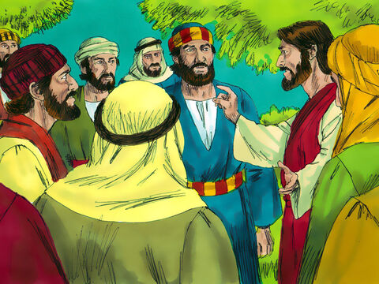
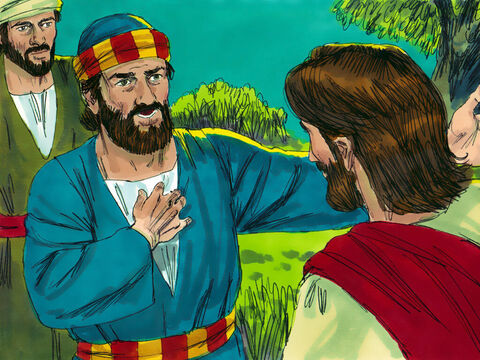

Lord Jesus Predicts Peter’s Denial
Then saith Jesus unto them, All ye shall be offended because of me this night: for it is written, I will smite the shepherd, and the sheep of the flock shall be scattered abroad.
But after I am risen again, I will go before you into Galilee.
Peter answered and said unto him, Though all men shall be offended because of thee, yet will I never be offended.
Jesus said unto him, Verily I say unto thee, That this night, before the cock crow, thou shalt deny me thrice.
Peter said unto him, Though I should die with thee, yet will I not deny thee. Likewise also said all the disciples.
Matthew 26:31-35
- 
- 